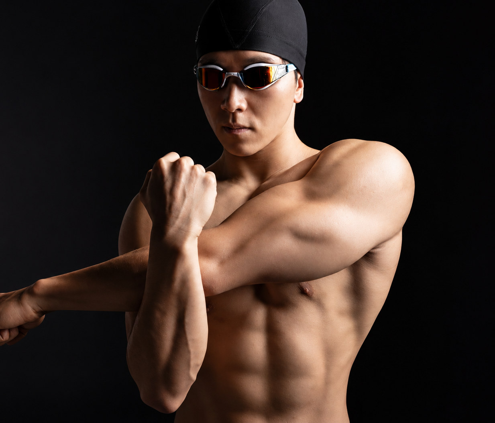
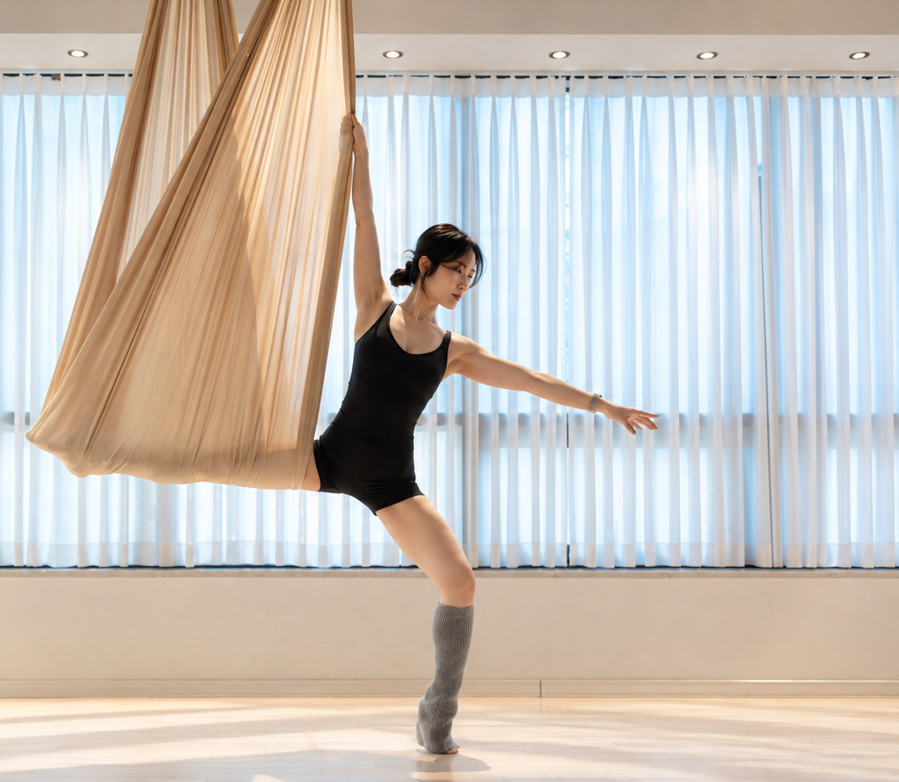
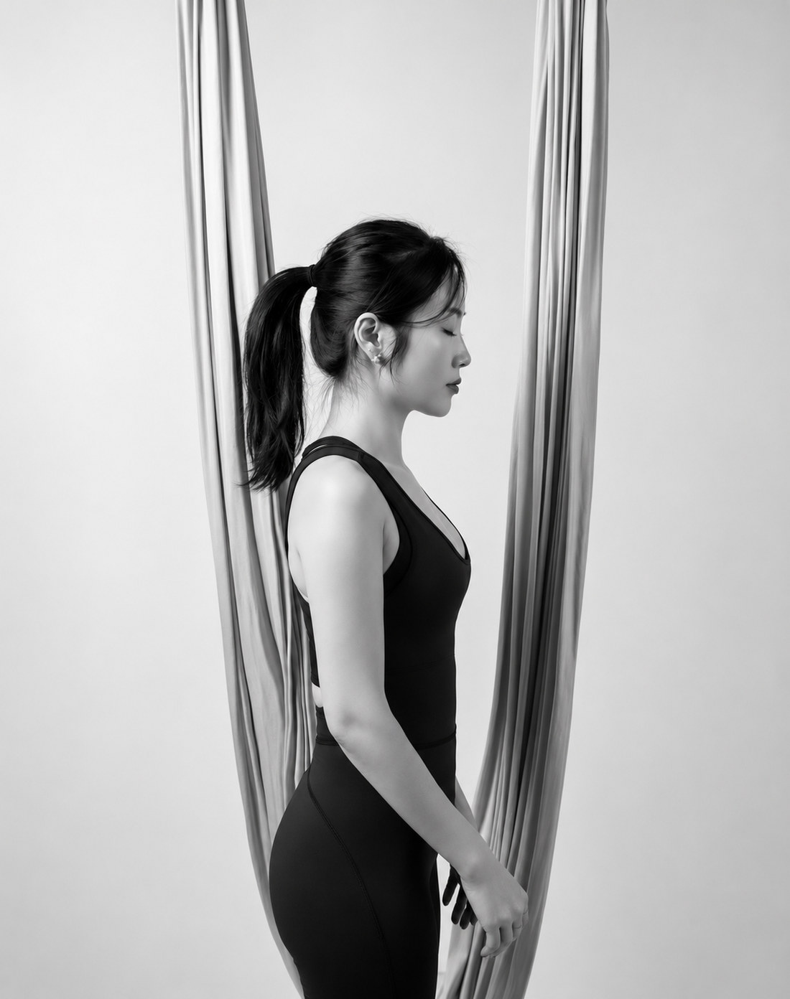
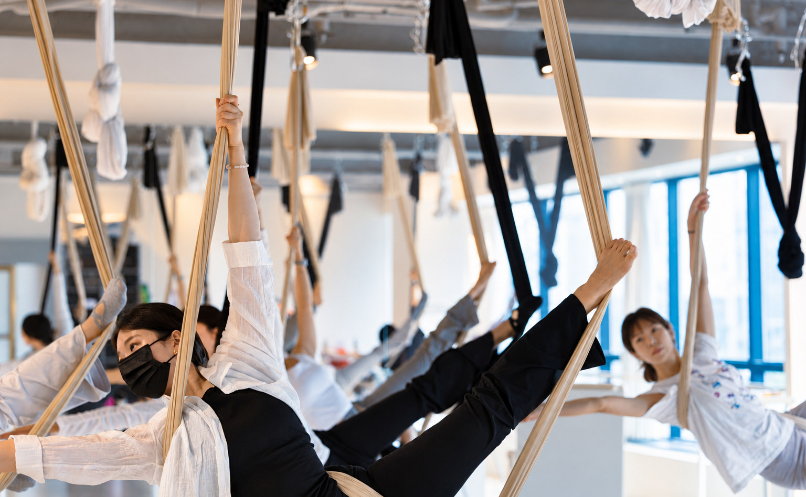
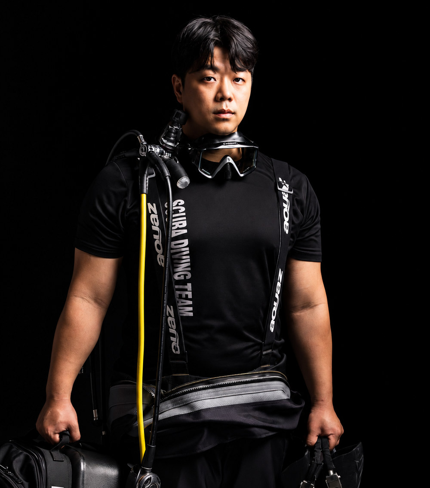
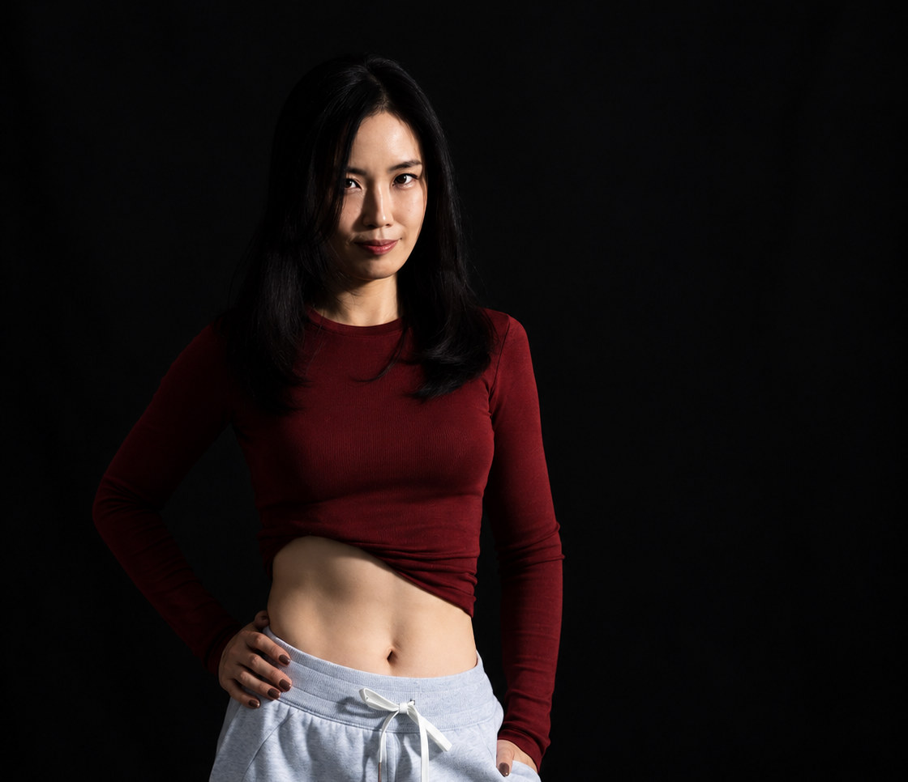

THE303 IN-HOUSE PHOTOGRAPHY
촬영 포트폴리오
움직임을 이해하는 시선 그 순간을 작품으로
수업의 공간에서 촬영의 무대까지
FLYING YOGA / BARRE / PORTRAIT / BODY PROFILE
플라잉요가와 바레의 움직임, 강사 프로필과 바디 화보까지. 동작의 선과 인물의 개성을 촬영의 시선으로 담습니다.
장면 살펴보기
측면의 빛으로 인물의 자세와 윤곽을 강조한 로우키 인물 사진.
THE303 PHOTOGRAPHY01 / THE ART OF MOVEMENT
순간의 선을 완성하는 디테일
실크 위 동작의 높이와 균형, 바레의 섬세한 정렬, 인물 고유의 표정까지. 빛과 구도로 각기 다른 움직임의 특징을 선명하게 드러냅니다.
SELECTED PHOTOGRAPHY
움직임이 남긴 장면들
공중의 움직임에서 인물의 표정까지. THE303이 바라본 여섯 개의 장면을 만나보세요.





BOOK A SHOOTTHE303 / PORTFOLIO
움직임을 담는 THE303.
당신의 움직임을 한 장의 작품으로
플라잉요가 · 바레 · 프로필 · 바디 화보
원하는 촬영 콘셉트와 일정을 THE303과 함께 상의해 보세요.